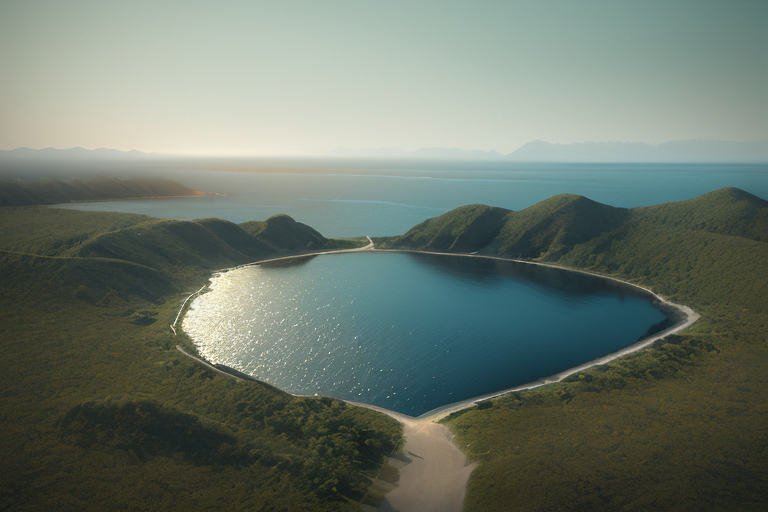
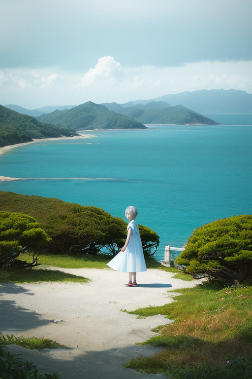
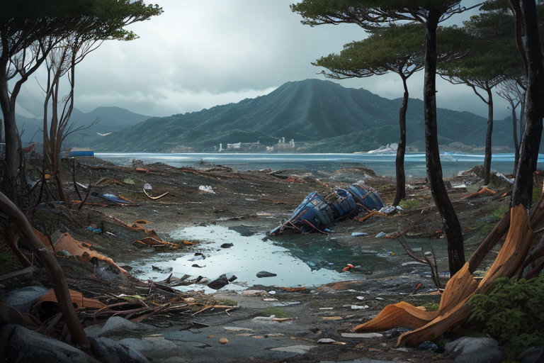
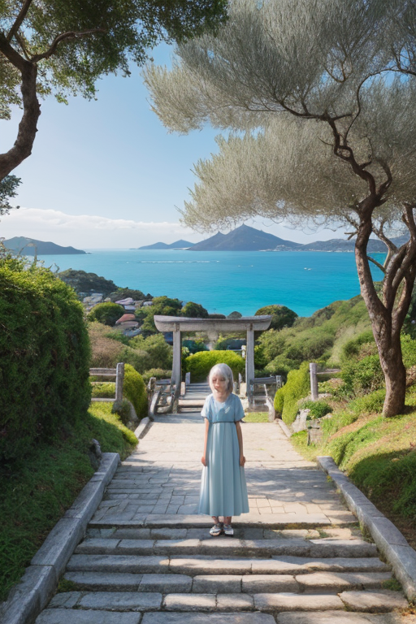
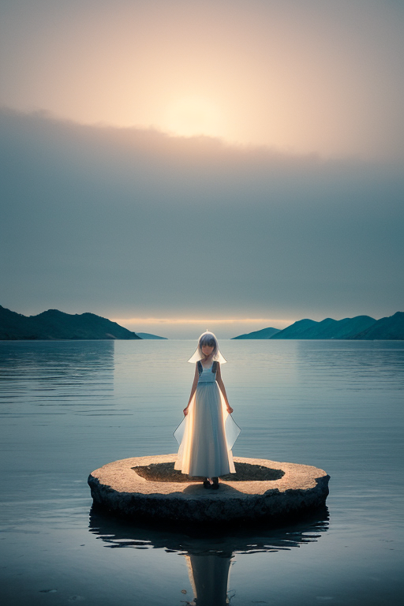

第一章 現実の香川
あなたはまだ気づいていない。この土地にも、王がいることを。
瀬戸内海に浮かぶ小豆島の港は、朝もやに包まれていた。本土と四国、無数の島々の狭間。ここは常に、内と外の境界線上にある。オリーブの葉が微かに揺れ、潮風が醤油蔵の匂いを運んでくる。土地は豊かだと言われるが、その実、水に乏しく、山は痩せ、平野は少ない。少なさがこの地の現実だった。
その現実を、王は見つめている。カガワリア・ミニマ。白と青の簡素な紋章をまとった彼は、父母ヶ浜の水鏡のような浜辺に立っていた。足元には、無駄な波紋一つない。彼の役目は、この土地の「歪み」を微調整すること。大地の軋みを一段階緩め、海の怒涛を数秒遅らせる。彼には感情はない、はずだった。しかし、この土地で長く過ごすうち、何かが内側で微かに動き始めていた。少ないものに囲まれること。それが、果たして豊かさなのかという問いが、無色の心に、ごく小さな皺を寄せた。

第二章 歪みの兆候
直島の海岸に、異質な「波」が寄せ始めた。それは物理的な波ではなく、観光客の増加という無形の圧力だった。瀬戸内国際芸術祭の成功は島に活気をもたらしたが、同時に、静謐を愛するこの土地の「歪み」を増幅させていた。過剰な期待、慌ただしい時間、消費されていく風景。これらはすべて、王が感知する「無駄波」だった。
簡素王カガワリア・ミニマは、盆栽のように剪定を繰り返す。不要な雑音を削ぎ落とし、地盤にかかる負荷を微かに分散させる。しかし、外部から流入する感情の密度は日に日に増し、彼の調整だけでは追いつかない気配があった。彼は淡々と作業を続ける。無駄を嫌う彼の原理は、この騒がしい「豊かさ」を、果たして真の豊かさと認めうるのか。問いは、作業の手をわずかに鈍らせた。

第三章 王の葛藤
直島の海岸に、異物が打ち上げられた。瀬戸内国際芸術祭の一作品、赤いポリタンクの山「シークレット・ボックス」の一部が、台風の余波で流れ着いたのだ。観光客の驚きと興奮、それを記録しようとする無数の電子機器の波長。それらはすべて、簡素王にとっては「無駄波」だった。彼は淡々と手を伸ばし、波長を剪定し、地盤への不要な共振を消していく。
しかし、その「無駄波」の中心で、一人の少女が赤い破片を拾い、不思議そうに眺めていた。彼女の感情は、単純な驚きではない。遠く離れた土地から来た、見知らぬ形への、切ないほどの好奇心。それは、王がこれまで削ぎ落としてきた「余剰」とは質が異なる。彼の手が止まった。
少なさこそが安定をもたらす。彼の原理はそう告げる。だが、この少女の内側に微かに広がる「世界」は、果たして無駄な膨張なのか。それとも、別種の豊かさの萌芽なのか。王は、初めて自らの原理を問うた。受け入れることも、拒絶することも、等しく「調整」から外れる行為のように思えた。彼はただ、無言で、流入する異質な感情の波を見つめ続けた。

第四章 妖精との対話
「王よ、それは『無駄波』ではありません」
妖精ミニエルが静かに言った。彼女は、少女の心から漏れ出る淡い光の粒を、掌にそっと受け止めていた。
「これは、『出会い』によって生じた余白です。削ぎ落とすべき雑音ではなく、内側に新たに生まれた『間』。少なさを追求する我々の王国にも、時として、こうした『間』が侵入します。それは、豊かさの対極ではなく、豊かさの別の相貌かもしれません」
王は黙ったまま、金刀比羅宮の石段を登る参拝者の列を見下ろした。整然とした動線、無駄のない歩み。そこに、一人、足を止めて空を見上げる老人がいた。その一瞬の「余白」が、風景に深みを加えている。
「受け入れることも、切り捨てることも、等しく『調整』ではないのか」
「はい。ですから、どちらかを選ぶのではなく、その『間』がもたらす歪みを、全体の均衡の中でどこに位置づけるか。それが我々の役目です」
ミニエルの声は、小豆島のオリーブ畑を渡る風のように乾いていた。
「彼女の内側に広がる世界は、王国の『簡素』を乱します。しかし、乱れそのものが、新たな均衡の始まりである場合もある。かつて空海がこの地から持ち帰った密教の体系も、異国からの『余剰』でした」
王は、自らの核となる問いを、初めて他者に投げかけた。
「では、少なさは豊かさか」
「それは、王が今、感じ始めている『問いそのもの』が、お答えになるでしょう」

第五章「微調整と余韻」
直島の海岸に、一つのベンチが置かれていた。訪れた美術愛好家が、疲れた足を休めようと腰を下ろす。彼は気づかない。このベンチの角度が、海に反射する夕陽の光がちょうど目に優しいように、妖精ウドニアが微調整していることを。光の「無駄」な眩しさを削ぎ落とし、ただ静かな余白だけを残す。
カガワリア・ミニマは、父母ヶ浜の水鏡に映る空を見つめていた。訪れる人々が写真を撮り、歓声を上げる。その感情の波は、時に王国の静寂を乱す「無駄波」ですらある。しかし王は、主席妖精ミニエルがそれを排除しようとするのを、最小限のジェスチャーで止めた。彼女自身、かつては排除すべきものと認識していたこの「雑音」の中に、何か不可欠なものを感じ始めていた。
少なさは豊かさか。問いは、彼女の内側で静かに結晶し始めていた。答えではない。盆栽の枝が微かに曲がるように、自身の認識が変容する「歪み」そのものが、答えへの道程だった。彼女は、瀬戸内の海を渡る風に、ごくわずかな調整を加えた。ほんの一呼吸分、潮の香りを濃くするために。
あなたの町にも、王がいる。